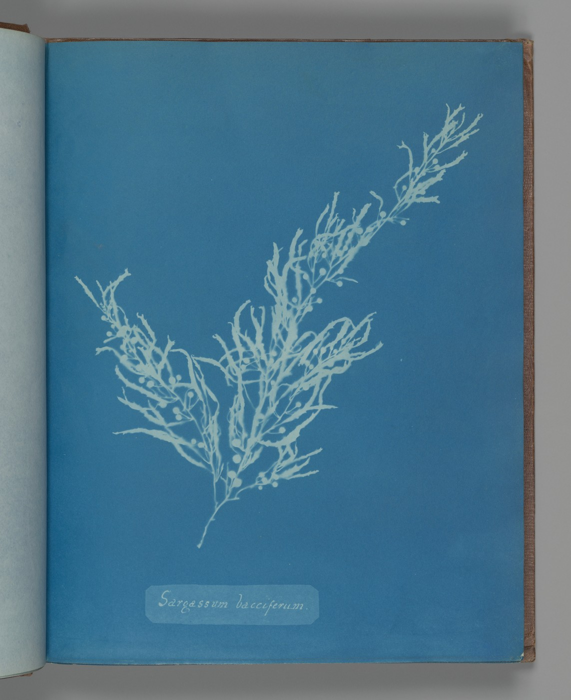
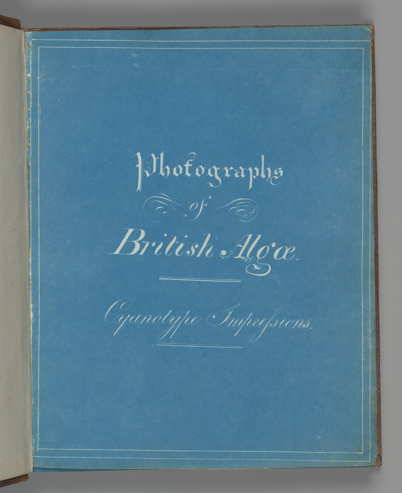

一片海藻斜放在藍色書頁上，分枝與小小的圓形構造呈現淡白色，下方寫著拉丁名稱。乍看像用白筆細細描出，實際上，安娜・阿特金斯（Anna Atkins）把標本放在感光紙上，靠曝光留下了形狀。她從 1843 年開始製作《英國海藻：藍曬印象》（Photographs of British Algae: Cyanotype Impressions）。這是一項攝影計畫，也是一項出版工作：讀者看到的每一頁，都需要有人取得標本、排好位置，再親手印出。
十九世紀的植物同好會採集、壓製、分類，也會交換標本。文字能描述形態，讀者卻還得把描述與手上的東西對照。當分枝很細、個體又小時，要把它畫清楚，既需要時間，也需要繪圖的判斷。
阿特金斯不是因為不會畫，才轉向攝影。她年輕時已為父親翻譯的貝類著作繪製插圖，後來也持續研究植物。她接觸藍曬時，面對的是如何把標本的細節做成可分享的圖像。
她的海藻圖版採用 William Henry Harvey 在 1841 年《英國海藻手冊》中的命名。那本手冊沒有插圖，阿特金斯的計畫因而有了清楚的對照對象：用影像補充已有的文字分類。頁底的學名，讓讀者能把一片形狀和書裡討論的種類連在一起。
藍曬是使用感光鐵鹽的攝影方法，由 John Herschel 在 1842 年提出。阿特金斯把處理過的紙、海藻標本與標籤安排好，再用玻璃壓住，放到日光下曝光。製作時不需要鏡頭把遠處的景物投射進來，影像就在物件與紙接觸的地方形成。
光照得到的部分，經過處理後形成藍色；標本遮住光的地方則比較淺。海藻有些部分較厚，有些較薄、可以透光，於是同一片圖像裡也會出現明暗差別。最後用水清洗，才得到可以保存的圖版。這裡的藍，是成像材料形成的顏色，並非海藻原本就是藍色。
這類不用相機、直接由物件遮光形成的照片，稱為物影照片（photogram）。它和隔著鏡頭拍下海藻的做法不同：壓平的程度、物件與紙的距離、分枝是否重疊，都會影響紙上呈現的線條。

看《Sargassum bacciferum》這一頁，可以沿著淡色分枝，一路辨認細小形狀如何排列。深藍背景把輪廓襯得清楚，頁底的標籤則把圖像和名稱連起來。這是接觸印相擅長保留的資訊。
不過，讀者無法從藍白影像恢復海藻的原色，也不容易據此判斷表面觸感，或看見未在這個角度顯露的構造。攝影史學者 Larry J. Schaaf還指出，印相緊繫著眼前這一片標本，它的形態未必代表同種植物的典型樣貌。
手繪插圖可以另外安排細部、選取特徵，把不同角度放在同一張圖裡；阿特金斯的物影照片，則保留了這一片標本在紙面上的形態。兩種方式提供不同的觀看條件。攝影進入植物研究之後，手繪版畫仍繼續被使用。
今天買一本印刷攝影書，通常拿到的是由同一套印版或數位檔複製的頁面。阿特金斯的書裡，圖版本身就是一張張藍曬原作。想再做另一份，就得準備另一張感光紙，重新放上標本、曝光、清洗。
標本可以用來製作多張圖版，卻不會把整本書的製作一起省掉。她還要取得不同種類的海藻，配上名稱，整理成批。第一批分冊在 1843 年 10 月出現，後續持續製作到 1853 年。這段時間，包含了大量重複而細緻的手工。
分冊也影響讀者如何收到它。Aperture 在 2019 年的展評描述，紐約公共圖書館保存的一部、原屬 Herschel 的存本，仍由手縫的小冊組成，沒有合訂成一大本。這個存本讓人看見，書的形成可以先是一批批寄給同好的頁面，再由持有人整理裝訂。

阿特金斯的海藻來自自己採集，也來自其他植物同好提供。父親 John George Children 的科學工作背景，讓她有機會接觸研究者與新的攝影方法；家庭的經濟條件，也支持她長期投入植物與圖像製作。這些條件和她本人的細心、技術，一起影響了計畫能做到的規模。
把她只寫成孤獨的天才，便會忽略標本如何到她手上；只寫成順手按下某個新發明，又會漏掉選擇物件、處理紙張、安排構圖與反覆印相的工作。她使用 Herschel 的方法，做出了他人能閱讀和收藏的圖冊。
後來，她也與好友 Anne Dixon 合作。1853 年的《英國與外國蕨類藍曬》、1854 年的花卉與蕨類冊，把取材擴展到更多植物。海藻分枝、蕨葉與花朵的形狀各異，製作者也得調整方向、並置與疏密。長期使用同一種方法，仍可以做出不同的頁面。
阿特金斯的藍曬如今常作為單張圖像出現在展覽、網站或印刷品上。這樣看，很容易注意藍色、線條和留白。回到書頁，還會看見標籤、頁邊、相鄰頁面，以及同一個計畫如何累積不同標本。
科學用途和美感並不是只能擇一的兩端。為了讓分枝清楚，她需要調整排列；把圖像納入書冊，又得考慮文字放哪裡、頁面容納多少東西。這些安排一方面幫助辨認，一方面也構成我們今天覺得好看的畫面。
看她的書，可以暫時把「照片是不是如實記錄」換成更細的問題：這張圖保留了什麼，又是透過哪些選擇才讓人看清楚？我們整理旅行照片、工作筆記或家人的舊物時，同樣在決定哪些細節留下、如何命名、用什麼次序交給別人看。記錄的價值，除了內容本身，也與這些安排有關。